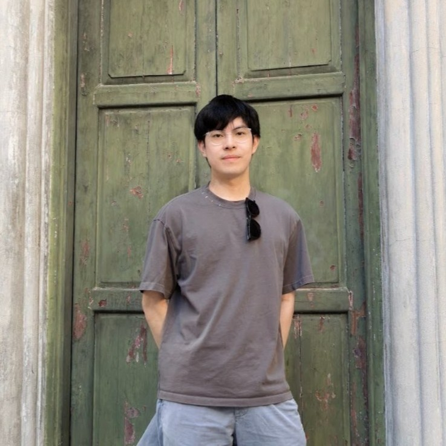

Machine Learning
I'm fascinated by systems that learn from data and reason about the best action to take.

Undergrad @ UW / Researcher in CS
I am a recent graduate of the University of Washington. At UW, I had the privilege of working with Phd student Dhruv Bhatia on metaprogramming in Lean. After graduation I have been focusing on my personal ML projects in Mujoco.
Outside of school, I love trivia, being active, and interacting with animals.
I'm fascinated by systems that learn from data and reason about the best action to take.
I enjoy translating mathematics into efficient, reliable code.
I'm drawn to the idea that software can come with mathematical guarantees.
The best way to reach me is by email at yulunc@uw.edu.
Currently based in Taipei.